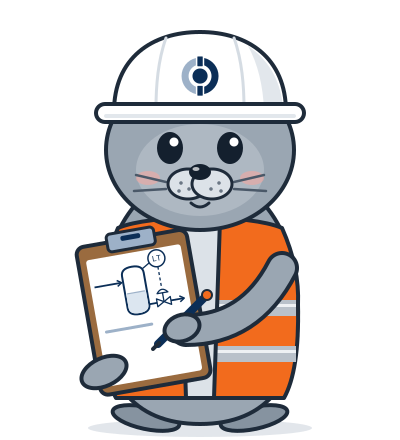

Instrumentação e controle
Especificação de instrumentos, arquitetura de controle, listas, folhas de dados e documentação de malhas.
- Requisitos e especificações
- Projeto básico e detalhamento
- Revisão de entregáveis
Engenharia consultiva
Projetos e consultoria em instrumentação, automação, segurança funcional e telecomunicações para empreendimentos industriais.
Conhecer os serviçosSobre a MILET
Atuamos no desenvolvimento e na revisão técnica de projetos industriais, com atenção às interfaces entre disciplinas, aos requisitos de segurança e à documentação de engenharia.
O trabalho começa pelo entendimento do problema: escopo, premissas, normas aplicáveis e decisões que precisam ser tomadas. A partir daí, estruturamos entregáveis claros para cada etapa.
Áreas de atuação
Apoio técnico da definição dos requisitos à verificação dos entregáveis.
Especificação de instrumentos, arquitetura de controle, listas, folhas de dados e documentação de malhas.
Definição e análise de sistemas de controle, redes industriais e integração entre equipamentos e plataformas.
Apoio de engenharia para SIS, intertravamentos e interfaces com sistemas de segurança industrial.
Infraestrutura e sistemas de comunicação para instalações industriais, integrados à automação e à operação.
Nossa abordagem
Engenharia aplicada ao contexto real do empreendimento, da análise de alternativas à consolidação dos documentos para implantação e operação.
Como trabalhamos
Reunir dados de entrada, premissas, restrições e interfaces do projeto.
Delimitar escopo, critérios de projeto e entregáveis necessários.
Produzir ou revisar documentos técnicos com consistência entre disciplinas.
Registrar comentários, decisões e revisões para a próxima etapa.
Contato
O canal comercial está sendo configurado. Esta página será atualizada com um contato verificado antes do lançamento completo.
